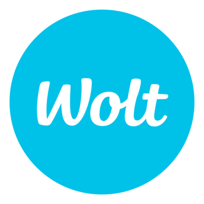
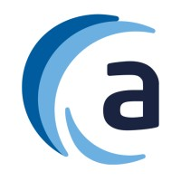
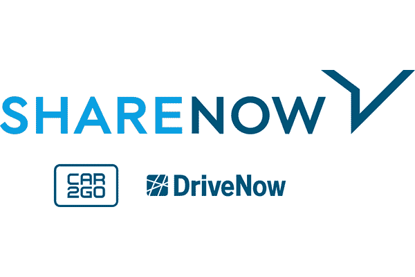

Anton Arkhipkin
Analytics/Data Engineer 15+ years of experience in building of the Data Infrastructure, ETL pipelines and DWH from scratch, migration from the legacy systems to the Cloud
Work permit: 🇩🇪Permanent residence | 🇷🇺 Citizenship
Work permit: 🇩🇪Permanent residence | 🇷🇺 Citizenship
🇩🇪 Berlin, Germany


EXPERIENCE

Wolt — Staff Analytics Engineer
JUNE 2024 - PRESENT
Technologies: Snowflake DWH | SQL | Python
Free2move (ex. SHARE NOW) — Principal Data Engineer Business Intelligence
APRIL 2023 - MAY 2024
Technologies: Snowflake DWH | dbt | SQL | Python | Airflow (MWAA) | Gitlab CI | docker

audibene — Lead Data Engineer
SEP 2022 - FEB 2023
Technologies: Snowflake DWH | dbt (Core & Cloud) | Python | Airflow (MWAA) | Jenkins | Rundeck

SHARE NOW — Senior Data Engineer Business Intelligence
SEP 2020 - AUGUST 2022
Technologies: MS SQL Server | Data Vault | Snowflake DWH | dbt (Core) | Python | Airflow (MWAA) | GitLab CI/CD | Docker
Friendsurance — (Senior) Business Intelligence Developer
OCT 2015 - SEP 2020
Technologies: MS SQL Server | SSIS | SSRS | SSAS | Python | Flask